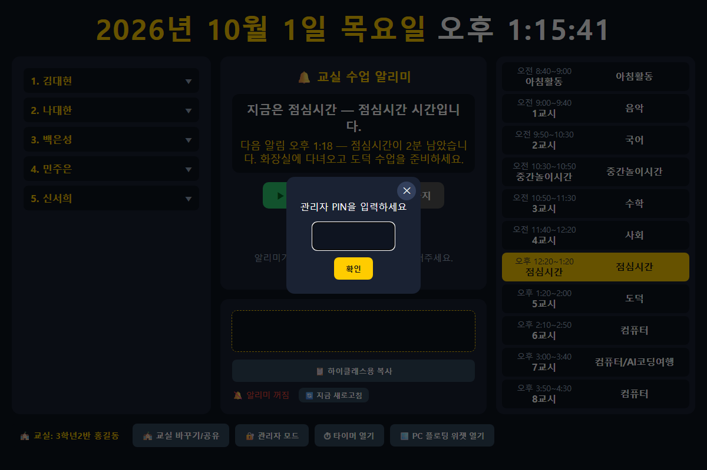
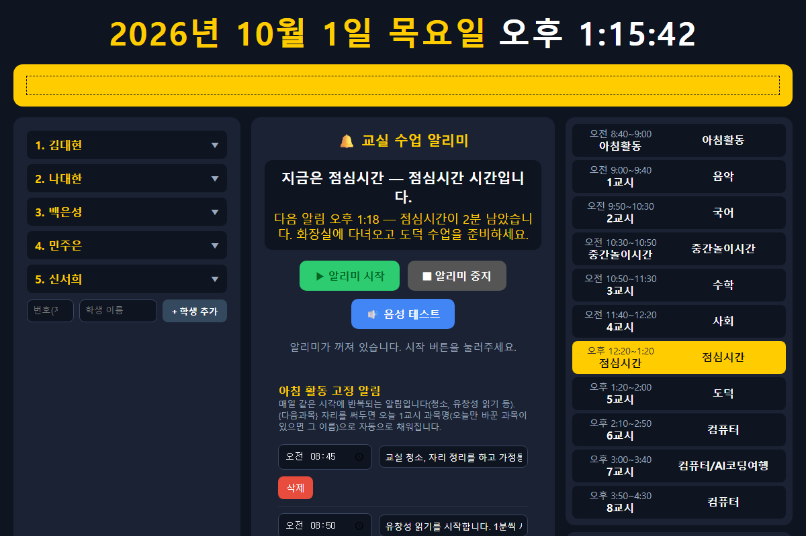
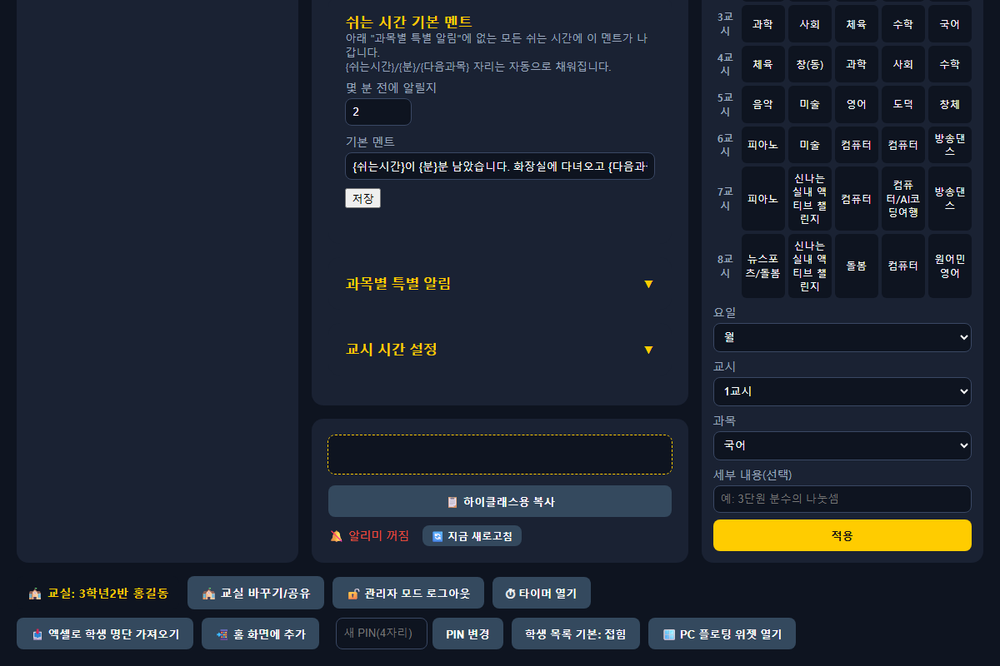

전자칠판에서 위 버튼(또는 이 주소)을 눌러 classroom-alarm.apk 파일을 내려받습니다.
내려받은 파일을 누르면 "출처를 알 수 없는 앱" 설치를 허용해달라는 안내가 뜰 수 있습니다 —
허용(설정으로 이동 → 허용)하고 다시 설치를 진행합니다.
설치가 끝나면 교실 알리미 아이콘이 생깁니다. 그 아이콘을 눌러 앱을 엽니다.
처음 열면 1단계와 똑같은 "교실 선택" 화면이 뜹니다. 이미 PC에서 교실을 만들어뒀다면
교실 코드 입력에 그 코드를 넣고 입장하기를
누르면 됩니다. 새 교실이 필요하면 여기서 바로 만들어도 됩니다.
한 번 들어가면 그 뒤로는 자동으로 같은 교실을 기억합니다 — 다시 설정할 필요가 없습니다.
설치 직후에는 꼭 아이콘을 한 번 직접 눌러 앱을 열어주세요. 안드로이드가 "한 번도 실행 안 된 앱"에는
부팅/예약 알림을 안 보내는 경우가 있어서, 최소 한 번은 수동으로 열어야 다음부터 자동 실행이 걸립니다.
자동 실행 시각 설정
전자칠판의 "예약 전원 켜짐" 시각에 맞춰, 이 앱도 매일 정해진 시각(기본 오전 8:45)에 자동으로
화면이 뜨도록 설정돼 있습니다. 이 시각은 설치 앱으로 열었을 때만 관리자 모드 화면 안에
"프로그램 자동 실행 시간" 카드로 나타나며, 거기서 바로 바꿀 수 있습니다(5단계 참고).
5 관리자 모드 사용법 (PIN·로그아웃)
시간표/학생 명단/알림 설정처럼 교사만 바꿔야 하는 항목은 "관리자 모드"에서만 수정할 수 있습니다.
화면 아래 🔐 관리자 모드 버튼을 누르면 PIN을 물어봅니다.

기본 PIN은 1234입니다 — 처음 들어가면 꼭 바꿔두세요(아래 참고).
PIN을 맞게 입력하면 관리자 모드로 들어가고, 시간표 편집·학생 추가 등 평소엔 안 보이던 입력칸이 나타납니다.

관리자 모드에서는 알림장 수정, 학생 추가, 수업종 알림 설정 등을 할 수 있습니다.
로그아웃 / PIN 바꾸기 / 그 밖의 관리자 버튼

관리자 모드에서는 버튼 글자가 "🔓 관리자 모드 로그아웃"으로 바뀝니다 — 다시 누르면 PIN 없이 바로 잠깁니다. PIN 변경, 학생 명단 가져오기 등도 이 줄에서 할 수 있습니다.
로그아웃: 관리자 모드 상태에서는 버튼 글자가 "로그아웃"으로 바뀝니다. 그 버튼을 한 번 더 누르면 됩니다.
PIN 변경: 관리자 모드에서만 보이는 새 PIN(4자리) 칸에 원하는 숫자 4자리를 입력하고 PIN 변경을 누릅니다.
PIN을 바꾸면 그 교실 코드를 쓰는 모든 기기(PC·태블릿·전자칠판)에 똑같이 적용됩니다. 다른 반과
섞이지 않도록, PIN은 그 교실을 실제로 관리하는 선생님만 알고 있는 숫자로 바꿔두는 걸 권장합니다.
? 자주 묻는 질문
교실 코드를 잊어버렸어요
이미 들어가 있는 다른 기기(PC 등)에서 🏫 교실 바꾸기/공유 버튼을 누르면 지금 코드를 다시 확인할 수 있습니다.
다른 선생님과 교실 코드가 겹칠까요?
직접 이름을 짓다가 이미 쓰이는 이름이면 "이미 사용 중인 이름이에요"라고 안내가 뜹니다. 자동 생성 코드는 겹칠 걱정이 거의 없습니다.
전자칠판 앱 없이 그냥 브라우저로 써도 되나요?
네, 가능합니다. 다만 음성 안내가 불안정하거나 매일 자동으로 켜는 기능이 없어서, 하루 종일 켜두는 전자칠판에는 전용 앱(4단계)을 권장합니다.
여러 반 전자칠판이 있어요. 앱을 여러 개 설치해야 하나요?
아니요, 같은 설치 파일 하나로 충분합니다. 전자칠판마다 설치 후 처음 열 때 "그 반"의 교실 코드만 다르게 입력하면 됩니다.